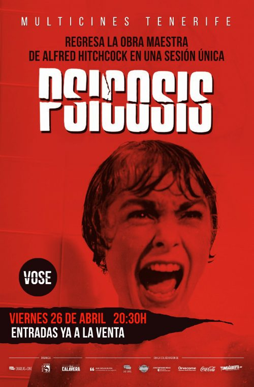
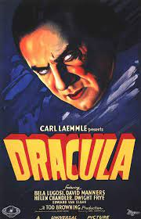
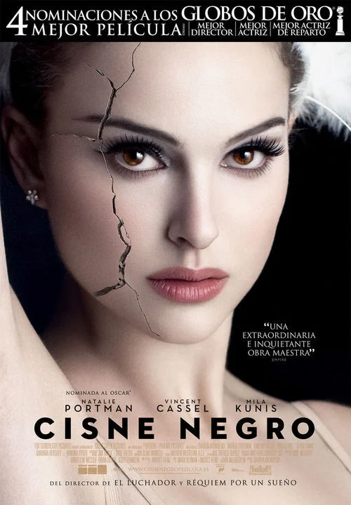

BELDURREZKOAK
Psicosis
1 ordu eta 49 minutu
Marion Crane, idazkari gaztea, bere enpresan diru bat lapurtu ondoren, hiritik ihes egiten du eta, ordu luzez gidatu ondoren, Norman Bates izeneko gazte lotsati batek gidatzen duen errepide txiki batean atseden hartzea erabakitzen du.
Autorea: Robert Bloch
El resplandor

2 ordu eta 26 minutu
Jack Torrance bere familiarekin hotel isolatu batera bizitzera doan gizon bat da. Hotel horrek zaindu egin behar du, bere idazkeraren sormen-blokeotik ateratzeko itxaropenarekin. Jackek blokeotik ihes egin ezin duen bitartean, bere semearen ikuspegi psikikoak handitzen doaz.
Autorea: Stephen King
Drácula
2 ordu eta 35 minutu
Banpiro bihurtu aurretik, Drakula kondea Vlad printzea zen, eta, maitearen heriotzaren berri izan zuenean, deabruari saldu zion arima. Lau mende geroago, Jonathan Harker, Europako ekialdeko gaztelu galdu batera doan abokatu gaztea, Drakula kondeak harrapatu zuen.
Autorea: Abraham Stoker
Cisne negro
1 ordu eta 50 minutu
New Yorkeko ballet konpainia bateko kide den dantzari bikain bat, dantzak erabat xurgatuta bizi da. Kontrolatzaile amaren presioak eta Lily lagunarekiko lehiak eragin izugarria izango dute neskarengan.
Autorea: Nassim Taleb